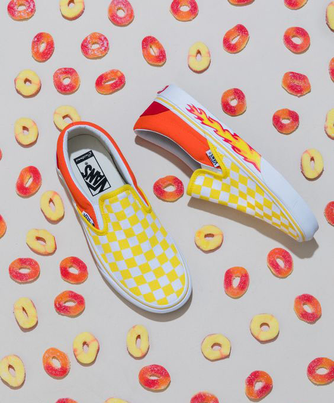

Er du vaskeægte sneakerhead eller vil du bare gerne have styr på dine sneakerfacts?
I Sneakers Magazine er der læsning for alle sneaker-entusiaster og nysgerrige sjæle, hvad end du vil vide mere om sneaker-kulturen, sneakerens historie eller du skal have styr på dine sneaker-begreber.